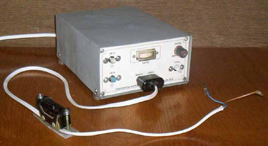
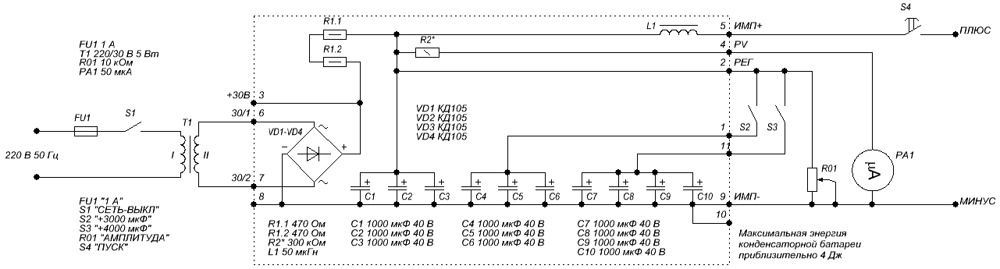
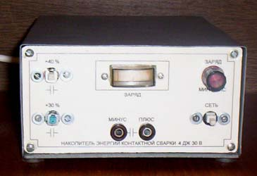
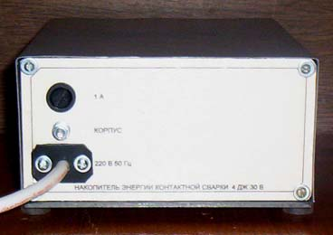
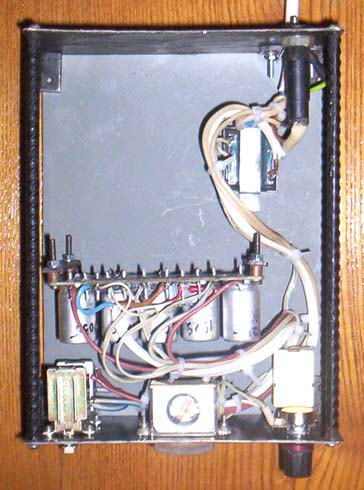
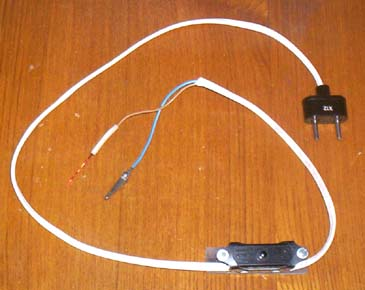

Аппарат с маломощным емкостным накопителем энергии для точечной контактной сварки тонких металлических лент

1. Назначение
Аппарат маломощной контактной сварки может использоваться для сваривания между собой металлических лент толщиной порядка 10 ... 30 мкм или приваривания их к вспомогательным металлическим деталям. Первоначальное предназначение разработки - технологические операции при изготовлении кольцевых сердечников феррозондов [2], а именно, приваривание тонких аморфных лент к намоточной бобине, а также закрепление конца ленты после намотки.
2. Конструкция
Схема электрическая принципиальная устройства представлена на рис. 2.1.

Рис. 2.1. Схема электрическая принципиальная аппарата маломощной контактной сварки.
В качестве источника энергии для аппарата используется сеть переменного тока напряжением 220 В частотой 50 Гц. Маломощный трансформатор T1 понижает сетевое напряжение до 30 В, одновременно осуществляя гальваническую развязку цепей устройства с сетью. Пониженное напряжение подается на мостовой диодный выпрямитель VD1 - VD4, а с его выхода через токоограничительные резисторы R1.1 и R1.2 на секционированную конденсаторную батарею C1 - C10, емкость которой может изменяться от 3000 мкФ до 10000 мкФ с помощью переключателей S2, S3. Напряжение заряда конденсаторной батареи регулируется с помощью шунтирующего переменного резистора R01, уровень заряда контролируется микроамперметром PA1, который подключается к батарее через добавочное сопротивление R2. Дроссель L1 предназначен для сглаживания сварочного тока и уменьшения скорости его нарастания. Кнопка S4 служит для подачи сварочного тока в момент сварки.
Внешний вид аппарата и приспособлений для сварки приведен на рис. 2.2 - 2.5. Узлы прибора собраны на металлическом основании. К основанию крепятся передняя и задняя панели с выведенными на них органами подключения, управления и контроля. Сверху прибор закрывается кожухом. Пусковая кнопка S4 вынесена наружу для удобства работы. Для обеспечения электрического контакта со свариваемыми деталями используется зажим и медный или латунный заостренный электрод толщиной примерно 1 мм. Подключение пусковой кнопки, зажима и сварочного электрода к выходной розетке аппарата осуществляется с помощью кабеля с вилкой.

Рис. 2.2. Аппарат маломощной контактной сварки (вид спереди).

Рис. 2.3. Аппарат маломощной контактной сварки (вид сзади).

Рис. 2.4. Аппарат маломощной контактной сварки (вид на монтаж).

Рис. 2.5. Пусковая кнопка, зажим и электрод аппарата маломощной контактной сварки.
При работе с аппаратом металлическая лента достаточно плотно прижимается с помощью заостренного электрода к другой металлической ленте или детали, к которой, в свою очередь, подсоединяется зажим. С помощью пусковой кнопки создается импульс тока и производится приваривание ленты.
3. Технические характеристики
Аппарат маломощной контактной сварки имеет следующие характеристики
4. Состояние разработки
Аппарат маломощной контактной сварки используется при намотке сердечников из аморфных лент для проведении магнитных испытаний [2], а также при изготовлении сердечников феррозондов [1].
Ссылки:
01.11.2021
Альтернативные источники
энергии
Компьютеры и
Интернет
Магнитные поля
Механотронные системы
Перспективные
разработки
Электроника и технология